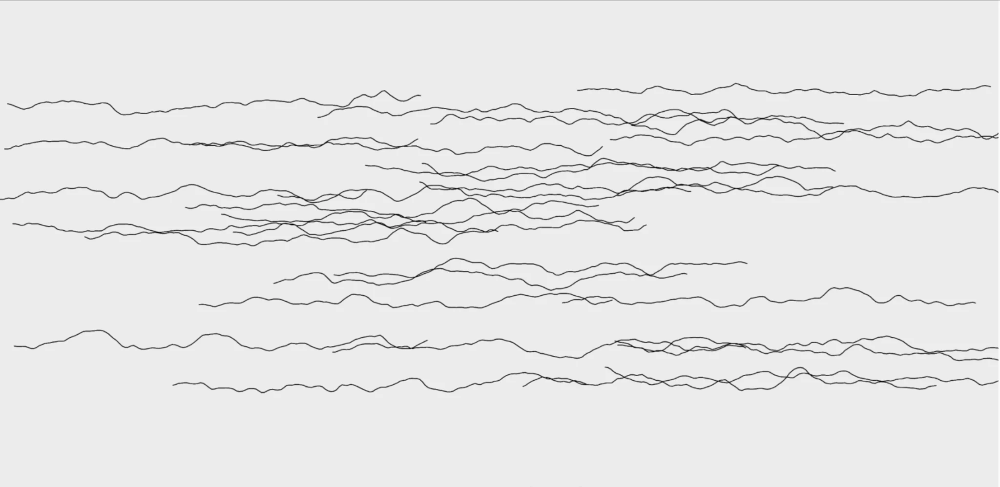
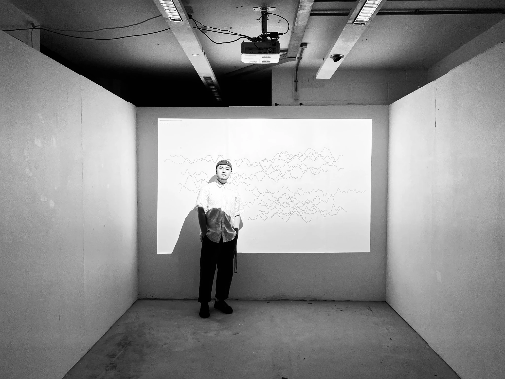

traceLine

Every trace reduces
what can happen next.
As wear accumulates, the system loses its ability to deviate.
traceLine approaches time as an irreversible process of accumulated wear rather than a neutral measurement.
As interaction continues, the system gradually loses its ability to deviate. Existing paths are retraced and reinforced, narrowing the range of what can happen next.



The projected work unfolds through sustained interaction, allowing accumulated traces to remain visible as the system becomes increasingly constrained by its own past.

Interactive computational artwork · generative system · DOM-based interaction · projection